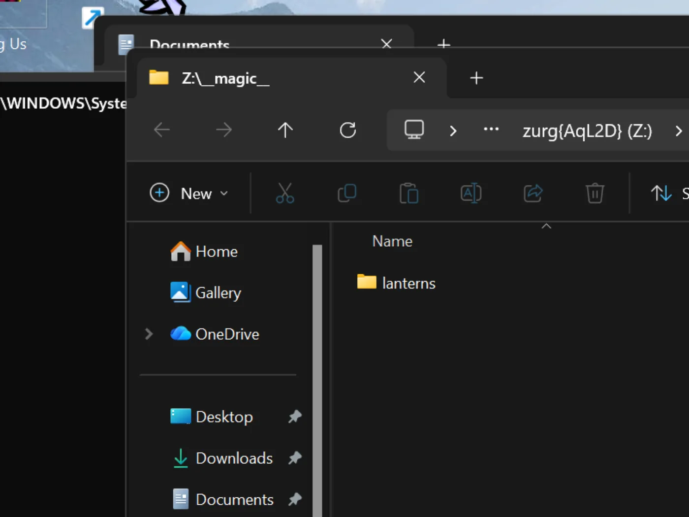

Windows, le binaire, depuis zéro
Option en une ligne
Lancez le bootstrap sponsor facultatif depuis PowerShell. Il installe WinFsp via UAC, télécharge zurg, puis lance le sélecteur de fournisseur et les diagnostics :
irm https://raw.githubusercontent.com/debridmediamanager/zurg-site/main/public/install.ps1 | iexIl utilise la connexion GitHub dans le navigateur et s'installe dans $HOME\zurg. Les binaires et configs existants restent en place. Continuez
plus bas pour la méthode manuelle.
Pas de Docker, pas de WSL : le .exe de zurg dans un dossier, un config.yml que vous écrivez une seule fois, et un lecteur Z: dans l'Explorateur.
Cette page parcourt tout en deux étapes : d'abord RealDebrid avec l'endpoint qBittorrent, puis une réinitialisation complète et Usenet avec l'endpoint SABnzbd. Ce sont les deux installations que les gens font vraiment, et elles sollicitent des parties différentes de zurg.
Tout ce qui suit a été relevé sur une installation réelle : Windows 11 Pro 23H2 (build 22631), PowerShell 5.1, WinFsp 2.0.23075, zurg 2026.08.30.0459-nightly-73-g5b4c9790, ainsi qu'un compte Real-Debrid et un compte de news Usenet. Les noms d'utilisateur ont été changés. Les clés API et le nombre de fichiers de la bibliothèque sont fictifs, tout comme les éventuels identifiants.
Ce dont vous avez besoin
- zurg.exe — depuis les releases sponsor. Deviens sponsor sur gatekeeper pour donner accès à ton compte GitHub. Cette page part du principe que tu l'as déjà téléchargé.
-
WinFsp — zurg monte la bibliothèque via rclone, et rclone a besoin de WinFsp pour une lettre de lecteur sous Windows. Installe-le en silencieux, ou depuis le programme d'installation :
$url = "https://github.com/winfsp/winfsp/releases/download/v2.1/winfsp-2.1.25156.msi" Invoke-WebRequest -Uri $url -OutFile "$env:TEMP\winfsp.msi" -UseBasicParsing Start-Process msiexec.exe -ArgumentList "/i", "$env:TEMP\winfsp.msi", "/qn", "/norestart" -Wait - Un compte — un token API Real-Debrid pour la première étape, un serveur de news pour la seconde.
Rien d'autre. L'installateur intégré télécharge rclone, et ffprobe aussi sauf si l'un des deux est déjà dans ton PATH.
Recommandé : laisser zurg terminer la configuration
Crée un dossier, place-y zurg.exe et lance l'installateur depuis PowerShell :
New-Item -ItemType Directory -Force "$HOME\zurg" | Out-Null
Set-Location "$HOME\zurg"
# Copy the downloaded zurg.exe here, then:
.\zurg.exe setup
.\zurg.exe doctorsetup te demande quels fournisseurs configurer. Choisis-en un ou plusieurs parmi Real-Debrid, TorBox, AllDebrid, Usenet, Premiumize, Debrid-Link et Offcloud, dans l'ordre de priorité. Il ne demande que les identifiants des fournisseurs sélectionnés. Ensuite, il :
- Crée et valide
config.yml. - Restreint ses ACL à ton utilisateur, à SYSTEM et aux Administrateurs.
- Télécharge
bin\rclone.exe, ainsi quebin\ffprobe.exe, sauf si un ffprobe est déjà présent dans ton PATH (dans ce cas,config.ymlcontientffprobe_binary: ffprobe). - Active le montage rclone sur
Z:. - Enregistre
\Zurg\zurgcomme tâche de connexion interactive et la démarre lorsqu'un utilisateur est connecté au bureau.
Si nécessaire, choisis un autre lecteur libre :
.\zurg.exe setup --mount-path "Y:"Tu peux relancer setup sans risque. Il met à jour la tâche générée, mais ne remplace pas un config.yml existant.
La tâche interactive est un choix délibéré. Les montages de lecteur WinFsp appartiennent à la session de connexion Windows qui les crée. Un service Windows classique s'exécute dans la session 0, et son lecteur reste invisible pour Plex et l'Explorateur sur le bureau. Ce comportement de l'installateur a été vérifié sur Windows 11 le 4 septembre 2026.
Le guide ci-dessous présente les fichiers et la configuration derrière l'installateur, puis construit les configurations des clients de téléchargement Real-Debrid et Usenet. Le premier lancement manuel et la recette de tâche planifiée sont utiles si tu veux assembler ces éléments toi-même.
1. Premier lancement manuel : zurg crée son propre dossier
Crée un dossier, place le binaire dedans et lance-le une fois sans fichier de configuration :
PS C:\Users\you> mkdir C:\Users\you\zurg
PS C:\Users\you\zurg> .\zurg.exezurg crée une configuration par défaut indépendante du fournisseur, t'indique la suite à faire, puis se termine :
INFO setup Config file not found, creating default from config.simple.yml
INFO zurg Default config created at config.yml
INFO zurg Run zurg setup to choose provider(s), or add a providers block to config.yml, then rerun zurg.Lance .\zurg.exe setup pour choisir tes fournisseurs et télécharger les outils d'aide. Après le setup, le dossier ressemble à ceci :
C:\Users\you\zurg\
├── bin\ rclone.exe, and ffprobe.exe unless ffprobe was on your PATH
├── data\ library cache, keys, the __magic__ table
├── dump\
├── logs\ zurg.log, rclone.log
├── nzbs\ the Usenet watch directory (second pass)
├── strm\
├── config.yml
└── zurg.exeLe config.yml généré commence avec une liste de fournisseurs vide et deux filtres de répertoires. Le setup remplit la liste selon tes choix. Les exemples manuels ci-dessous remplacent ce fichier par la configuration de chaque tutoriel.
2. La passe RealDebrid
La configuration
Écrase config.yml avec ceci : un token Real-Debrid, l'endpoint qBittorrent activé et le montage en Z: :
zurg: v1
providers:
- type: realdebrid
token: YOUR_RD_API_TOKEN
directories:
shows:
group: media
group_order: 10
filters:
- has_episodes: true
movies:
group: media
group_order: 20
only_show_the_biggest_file: true
ffprobe_binary: bin\ffprobe.exe # or ffprobe, if that is what setup wrote
rclone_binary: bin\rclone.exe
rclone_enabled: true
mount_path: "Z:"
rclone_extra_args:
- "--links"
magic:
enabled: true
qbittorrent:
enabled: true
api_key: "" # empty = zurg generates one and keeps it
categories: [tv-sonarr, radarr]Il y a trois particularités Windows à connaître :
--linksest facultatif, mais mieux vaut le garder. zurg sert la bibliothèque comme une union rclone d'une moitié locale et d'une moitié distante, et WinFsp demande à la racine du montage si c'est un lien symbolique dès que le lecteur apparaît. Sans le flag, rclone répond à cette requête avecERROR : symlinks not supported without the --links flag: /et monte quand même. Mesuré le 2026-08-31 avec zurg2026.08.31.0443-nightlyet rclone 1.74.2 et 1.75.0 : le lecteur, les deux moitiés de l'union et une écriture dans__magic__se comportaient de façon identique avec et sans le flag. Avec le flag, la même requête journalise plutôtNOTICE: union root '': Symlinks support enabled, et rclone prendra en charge de vrais liens symboliques si tu en mets un jour sousdata\local. Garde-le et le journal reste propre.mount_path: "Z:"est ici une lettre de lecteur, pas un chemin POSIX. N'importe quelle lettre libre convient.- Garde
magic.enabled: truesi tu veux un jour que Sonarr ou Radarr importent depuis cette machine : un import est un renommage dans__magic__, et sans cette option chaque import devient un téléchargement complet. Il en va de même pour la partie Usenet ci-dessous.
Démarrez-le et lisez le journal
Lance zurg de la façon la plus simple pour l'instant : une fenêtre PowerShell dans le dossier :
PS C:\Users\you\zurg> .\zurg.exe --config config.ymlLa première chose qu'il fait est le test réseau de Real-Debrid. Il débloque des liens de test dans chaque région de téléchargement et mesure la latence, ce qui prend environ vingt secondes. Voici ensuite les lignes importantes :
INFO network_test Network test completed!
INFO zurg Provider realdebrid ready (type=realdebrid)
INFO router __magic__ serves sidecar files from data\local\__magic__
INFO router.qbittorrent qBittorrent API on /api/v2 and /qbittorrent/api/v2, save path Z:/__magic__/__all__, categories tv-sonarr, radarr
INFO router.qbittorrent qBittorrent: generated an API key in data/qbittorrent-apikey — paste it into Sonarr or Radarr's API Key field, or pin one as qbittorrent.api_key in config.yml
INFO zurg Starting server on http://[::]:9999
INFO rclone rclone started with mount Z:, union local C:\Users\you\zurg\data\localLe journal n'affiche jamais la clé elle-même. Elle se trouve dans data\qbittorrent-apikey. Puis le parcours de la bibliothèque commence. Au premier lancement, zurg lit chaque torrent du compte, et sur un gros compte cela prend un moment. Ce parcours partage le budget d'API du fournisseur avec tout le reste du compte. Pendant ce parcours, __magic__ répond Library is still loading. C'est normal, ce n'est pas un bug.
Tu peux voir un avertissement connu, qui n'est pas bloquant :

Le tableau de bord
http://localhost:9999/ — taille de la bibliothèque qui augmente au fil du parcours, trafic servi, mémoire. Les Quick Links constituent toute l'interface : Torrent Manager, Config, Directories, Magic, Logs.

Config est l'endroit où tout se trouve après le premier lancement. Le bloc providers affiche l'unique compte :

Le bloc download-client — les mêmes interrupteurs que vous réglez dans config.yml, modifiables ici, et chaque changement est marqué Restart Required, ce qui est littéral : les deux endpoints enregistrent leurs routes une seule fois au démarrage.

Et le bloc de montage, qui montre la lettre de lecteur et la supervision de rclone :

Le lecteur Z:
Quand zurg tourne, Z: est un système de fichiers à l'échelle du pétaoctet dans l'Explorateur de fichiers :

Mais seulement si zurg tourne là où l'Explorateur peut le voir, et c'est la seule règle vraiment propre à Windows dans cette configuration. Un montage sur lettre de lecteur appartient à la session de connexion qui l'a créé. Si vous lancez zurg depuis une connexion SSH ou depuis un service, le montage existe, fonctionne, mais reste invisible pour votre bureau. Ce n'est pas un bug de WinFsp ou de rclone : c'est simplement la façon dont Windows limite la portée des lettres de lecteur.
Vérifier le point de terminaison qBittorrent
Mêmes sondes que sur toutes les plateformes, depuis n'importe quel PowerShell :
PS> $KEY = Get-Content data\qbittorrent-apikey
PS> Invoke-WebRequest "http://localhost:9999/api/v2/app/webapiVersion"
# the healthy unauthenticated answer is a 403 — "the API is here, log in"
PS> Invoke-RestMethod "http://localhost:9999/api/v2/app/version" -Headers @{ Authorization = "Bearer $KEY" }
v5.0.4
PS> (Invoke-RestMethod "http://localhost:9999/api/v2/app/preferences" -Headers @{ Authorization = "Bearer $KEY" }).save_path
Z:/__magic__/__all__Ajoute aussi un torrent. Un fichier .torrent s'envoie avec curl.exe -F (le curl tout court dans Windows PowerShell correspond à Invoke-WebRequest, qui n'a pas de -F), ou alors n'importe quel client s'en charge à ta place :
INFO router.qbittorrent qBittorrent: added op1176 (dc98af37…) to realdebrid as W7FRRMVJWUOMSLa release récupérée par cette installation n'était pas en cache sur le compte. La file de type *arr affichait donc un vrai téléchargement : la progression grimpait de 2% → 10% → 50% → 75% → 99% en six minutes environ, au débit rapporté par Real-Debrid, puis :
INFO router.qbittorrent qBittorrent: op1176 (dc98af37…) finished on realdebridavec le torrent signalé comme terminé et un dossier à importer :
"content_path": "Z:/__magic__/__all__/[NanakoRaws] One Piece S01E1176 (THK TV 1080p HEVC AAC)"Lire le fichier via Z: a récupéré un mégaoctet en quelques millisecondes. Le read-ahead du VFS de rclone se place devant le fournisseur : les lectures déjà en cache vont à la vitesse d'un disque local, et le reste arrive en flux derrière.
Un refus à connaître : la première release testée par cette installation s'appelait …WEBRip…, et Real-Debrid bloque carrément certains noms de release. zurg connaît ces motifs et refuse avant de consommer un emplacement d'ajout :
WARN router.qbittorrent qBittorrent: realdebrid will not take op1176: it refuses that name outright, so the next account is triedChoisis une release portant un autre nom et elle passe. Le guide pas à pas sur les torrents détaille tout le point d'accès (délais d'attente, mode cached-only, comportement en cas d'échec), et les réglages du client y sont les mêmes, avec deux remarques pour Windows : Host localhost quand le *arr tourne sur la même machine, et le *arr doit tourner dans la même session de connexion que zurg pour voir Z:. Voir
3. Réinitialisation
Passer l'installation de Real-Debrid à Usenet, c'est une remise à zéro complète : arrêtez zurg, supprimez tout ce que la première passe a créé, et gardez le binaire et bin\ pour que les téléchargements des outils annexes ne se répètent pas.
PS> cd C:\Users\you\zurg
PS> .\zurg.exe service uninstall # removes the task setup made; or Unregister-ScheduledTask zurg for the manual one, or close the console window
PS> taskkill /IM zurg.exe /F ; taskkill /IM rclone.exe /F
PS> Get-ChildItem -Exclude zurg.exe, bin | Remove-Item -Recurse -Force
PS> Get-ChildItem
bin
zurg.exeCette commande Get-ChildItem -Exclude … | Remove-Item fait toute la réinitialisation : config.yml, data\, logs\, nzbs\, tout y passe. Ce qui reste correspond exactement à ce qu'une nouvelle installation a besoin.
4. La passe Usenet
La configuration
Même structure, autre fournisseur : un compte news au lieu d'un jeton debrid, et le point d'accès SABnzbd au lieu de celui de qBittorrent :
zurg: v1
providers:
- type: nzb
nntp:
host: news.example.usenet.com
port: 563
tls: true
username: YOUR_NEWS_USERNAME
password: YOUR_NEWS_PASSWORD
connections: 8
directories:
shows:
group: media
group_order: 10
filters:
- has_episodes: true
movies:
group: media
group_order: 20
only_show_the_biggest_file: true
ffprobe_binary: bin\ffprobe.exe # or ffprobe, if that is what setup wrote
rclone_binary: bin\rclone.exe
rclone_enabled: true
mount_path: "Z:"
rclone_extra_args:
- "--links"
magic:
enabled: true
sabnzbd:
enabled: true
api_key: "" # empty = zurg generates one and keeps it
categories: [tv, movies]Huit connexions suffisent largement pour le streaming. Le forfait de votre compte indique sa propre limite.
Démarrez-le
PS C:\Users\you\zurg> .\zurg.exe --config config.ymlLe contraste avec le premier passage est immédiat : pas de scan. Une bibliothèque NZB démarre vide. Il n'y a rien à récupérer tant que tu n'y as pas mis de NZB. Au démarrage, on fait donc le test réseau, les lignes des endpoints et la connexion au serveur de news :
INFO nzb NZB articles are kept in memory for the life of the process (nzb_segments: resident)
INFO zurg Provider nzb ready (type=nzb)
INFO router __magic__ serves sidecar files from data\local\__magic__
INFO router.sabnzbd SABnzbd API on /api and /sabnzbd/api, completed directory Z:/__magic__/__all__, categories tv, movies
INFO router.sabnzbd SABnzbd: generated an API key in data/sabnzbd-apikey — paste it into Sonarr or Radarr, or pin one as sabnzbd.api_key in config.yml
INFO zurg Starting server on http://[::]:9999
INFO rclone rclone started with mount Z:, union local C:\Users\you\zurg\data\local
INFO zurg Usenet account nzb connected: nntps://news.example.com:563 (8 connections)zurg se connecte au serveur de news dès son lancement et garde les connexions ouvertes, TLS compris. La clé API de SABnzbd est enregistrée dans data\sabnzbd-apikey.

Le tableau de bord affiche maintenant une bibliothèque vide, et c'est normal :

Le bloc providers contient le compte de news, et le bloc des clients de téléchargement affiche maintenant la partie SABnzbd :


Déposez un NZB
Le dossier nzbs\ est le seul point d'entrée. Dépose un NZB là, téléchargé depuis n'importe quel indexeur, et zurg le récupère :
PS> Copy-Item .\lanterns.nzb C:\Users\you\zurg\nzbs\INFO nzb Loaded NZB lanterns.nzb: 8 filesC'est la ligne qui indique que le NZB a bien été analysé. La release apparaît comme un dossier dans __magic__\__all__ sur le montage. Comme une release Usenet nomme ses fichiers comme l'a voulu celui qui l'a postée, le fichier à l'intérieur peut ressembler à J8AZfuVQCD4yPpRIF566Bv0xKoEpYa3M.mkv. Le dossier de la release porte le nom du NZB, et les fichiers portent le nom du posteur :

À ce stade, rien n'a été téléchargé, et rien ne le sera tant que quelque chose ne lira pas un fichier. La première lecture de l'épisode, 162 Mo, a récupéré exactement les articles couvrant la plage demandée, les a décodés en yEnc et a répondu. Les lectures suivantes ont été instantanées parce que le VFS avait anticipé autour d'elles. Un remux de 60 Go ne coûte 60 Go d'espace disque nulle part, ni sur Usenet ni sur debrid.
L'endpoint SABnzbd répond aux mêmes sondes que d'habitude :
PS> $KEY = Get-Content data\sabnzbd-apikey
PS> Invoke-RestMethod "http://localhost:9999/api?mode=version&apikey=$KEY&output=json"
{"version":"4.5.1"}
PS> (Invoke-RestMethod "http://localhost:9999/api?mode=get_config&apikey=$KEY&output=json").config.misc.complete_dir
Z:/__magic__/__all__Une mauvaise clé est refusée dans le corps de la réponse, avec un HTTP 200. C'est ainsi que SABnzbd se comporte lui-même, et zurg fait pareil :
PS> Invoke-RestMethod "http://localhost:9999/api?mode=queue&apikey=wrong&output=json"
{"status":false,"error":"API Key Incorrect"}Pour la partie client (Sonarr, Radarr, catégories, dossiers racines sous Z:\__magic__), le guide pas à pas Usenet détaille chaque étape. Chaque chemin qu'il contient se convertit en remplaçant /mnt/zurg/__magic__ par Z:\__magic__. Le guide Usenet couvre les comptes à blocs, la rétention et la réparation.
Le faire tourner en continu : les règles de session
Une lettre de lecteur appartient à la session de connexion qui l'a montée. En pratique, sur la machine où cette page a été capturée :
zurg setup crée automatiquement la tâche interactive qui fonctionne. Gère-la depuis le répertoire de zurg :
.\zurg.exe service status
.\zurg.exe service restart
.\zurg.exe service stop
.\zurg.exe service start
.\zurg.exe service uninstallStop et restart demandent d'abord à zurg de s'arrêter proprement, pour que son enfant rclone libère le lecteur. uninstall supprime la tâche mais laisse le binaire, la configuration, les données, les journaux et le cache.
L'équivalent manuel est une tâche planifiée qui tourne sous ton nom uniquement quand tu es connecté :
$wdir = "C:\Users\you\zurg"
Set-Content "$wdir\start-zurg.cmd" "@echo off`ncd /d $wdir`nzurg.exe --config config.yml"
$action = New-ScheduledTaskAction -Execute "cmd.exe" -Argument "/c $wdir\start-zurg.cmd"
$trigger = New-ScheduledTaskTrigger -Once -At (Get-Date).AddSeconds(5)
$principal = New-ScheduledTaskPrincipal -UserId $env:USERNAME -LogonType Interactive
$settings = New-ScheduledTaskSettingsSet -AllowStartIfOnBatteries -ExecutionTimeLimit ([TimeSpan]::Zero)
Register-ScheduledTask -TaskName "zurg" -Action $action -Trigger $trigger `
-Principal $principal -Settings $settings -Force
Start-ScheduledTask -TaskName "zurg"Un déclencheur à la connexion (New-ScheduledTaskTrigger -AtLogOn) à la place de -Once fait redémarrer la tâche après un redémarrage. ExecutionTimeLimit ([TimeSpan]::Zero) est important : sans lui, le Planificateur de tâches tue la tâche au bout de 72 heures.
Deux pièges mesurés sur cette machine :
- Une console avec
-NoExitbloque l'emplacement de la tâche. Si le lanceur laisse une fenêtre ouverte après l'arrêt de zurg, le planificateur considère que la tâche tourne encore, et chaqueStart-ScheduledTasksuivant est refusé avec0x800710E0. LanceStop-ScheduledTask zurgavant de la redémarrer, ou exécute le binaire directement comme ci-dessus, pour que la tâche se termine avec zurg. Get-PSDrivedans une fenêtre ne prouve pas que le montage a disparu. Le lecteur n'est visible que pour les processus de la même session de connexion (tes applications de bureau), pas pour chaque PowerShell que tu ouvres. SiZ:manque dans une fenêtre, vérifie d'abord d'où vient la session de cette fenêtre avant de conclure que le montage a échoué.
Si tu n'as pas besoin d'Explorer du tout (une machine sans écran, ou des clients qui parlent HTTP), rien de tout cela ne compte : lance zurg comme tu veux et pointe vers http://localhost:9999/dav/ ou les points de terminaison. La règle de session ne concerne que la lettre de lecteur.
Atteindre zurg depuis une autre machine
Les programmes sur ce PC accèdent à zurg via localhost. Le pare-feu Windows bloque tout le reste de votre réseau tant que vous ne l'autorisez pas. Pour Sonarr, Radarr, un serveur multimédia ou un navigateur sur une autre machine, exécutez cette commande une seule fois dans PowerShell en tant qu'administrateur (si vous avez mis un autre port: dans config.yml, utilisez ce numéro) :
New-NetFirewallRule -DisplayName zurg -Protocol TCP -LocalPort 9999L'autre machine utilise ensuite l'adresse IPv4 de ce PC, affichée par ipconfig, à la place de localhost.
Si elle n'obtient toujours aucune réponse, cherchez une règle qui bloque zurg. Cliquer sur Cancel dans la fenêtre de Windows pour autoriser zurg.exe en crée une, et une règle de blocage l'emporte sur la règle ci-dessus. Cette commande supprime celles pour zurg.exe dans $HOME\zurg, également en tant qu'administrateur (modifiez le chemin si zurg est ailleurs) :
Get-NetFirewallApplicationFilter -Program "$HOME\zurg\zurg.exe" | Get-NetFirewallRule | Where-Object Action -eq Block | Remove-NetFirewallRuleGarder le cache petit
Le montage enregistre chaque fichier lu, en entier, dans data\rclone-cache à l'intérieur du dossier zurg ($HOME\zurg\data\rclone-cache si vous avez utilisé l'installation en une ligne). Il conserve ces fichiers une fois la lecture terminée, et il grossit jusqu'à 256G par défaut.
Ne comptez pas sur la limite d'âge de 72h pour le nettoyer. Les tâches planifiées de Plex lisent les fichiers en cache chaque nuit, ce qui remet leur âge à zéro : rien n'expire donc jamais. La limite de taille est la seule qui fonctionne vraiment.
Pour utiliser moins d'espace disque, baissez la limite dans config.yml. rclone_extra_args est une seule liste : ajoutez donc les nouvelles lignes sous le --links que vous avez déjà, au lieu d'écrire un second rclone_extra_args: :
rclone_extra_args:
- "--links"
- "--vfs-cache-max-size"
- "50G"
- "--vfs-cache-min-free-space"
- "20G"--vfs-cache-min-free-space demande à rclone d'arrêter la mise en cache quand le disque n'a plus que cet espace libre. Redémarrez ensuite zurg :
.\zurg.exe service restartrclone réduit le cache à la nouvelle limite après le redémarrage. Pour le vider tout de suite, arrêtez d'abord zurg :
.\zurg.exe service stop
Remove-Item -Recurse -Force .\data\rclone-cache\vfs\*, .\data\rclone-cache\vfsMeta\* -ErrorAction SilentlyContinue
.\zurg.exe service startPour vérifier l'espace réellement utilisé, ouvrez les Properties du dossier rclone-cache et regardez Size on disk. Les fichiers partiellement téléchargés sont creux, donc Size affiche bien plus que ce que le disque contient réellement.
Plus de détails dans Espace disque utilisé par le montage.
Mettre à jour zurg
Un build sponsor se remplace lui-même :
cd $HOME\zurg
.\zurg.exe update
.\zurg.exe service restartupdate récupère la nightly la plus récente, vérifie que le téléchargement indique bien la version attendue avant de remplacer quoi que ce soit, et déplace le zurg.exe en cours d'exécution pour que Windows laisse la nouvelle version s'installer. Si le build installé est déjà le plus récent, il le dit et ne change rien. Le redémarrage lance le nouveau build.
Sur un build trop ancien pour connaître la commande, l'installateur fait le même travail :
$env:ZURG_INSTALL_MODE = "update"; irm https://raw.githubusercontent.com/debridmediamanager/zurg-site/main/public/install.ps1 | iexDépannage
Toujours bloqué ? Demande sur le forum zurg-support sur Discord. Obtenir de l'aide explique ce qu'il faut inclure.
PowerShell via SSH, pour ceux qui pensent à distance
Windows PowerShell interprète mal certaines habitudes POSIX, et SSH mange les guillemets. && n'est pas un séparateur ; 2>/dev/null n'est pas une redirection ; $_.Property dans un -Command en ligne arrive déformé. Pour tout ce qui n'est pas trivial, mets le code dans un .ps1, copie-le sur la machine, puis lance powershell -ExecutionPolicy Bypass -File C:\path\script.ps1. C'est exactement de cette façon que tout le montage de cette page a été piloté.
Voir aussi
- Linux, Docker et macOS — la même installation sur d'autres plateformes
- Sonarr & Radarr pour torrents — le point de terminaison qBittorrent de bout en bout, paramètres du client inclus
- Sonarr & Radarr — le point de terminaison SABnzbd, idem
- Usenet — comptes de news, rétention, réparation, le backend
nzben détail __magic__— le répertoire dans lequel les deux points de terminaison importent